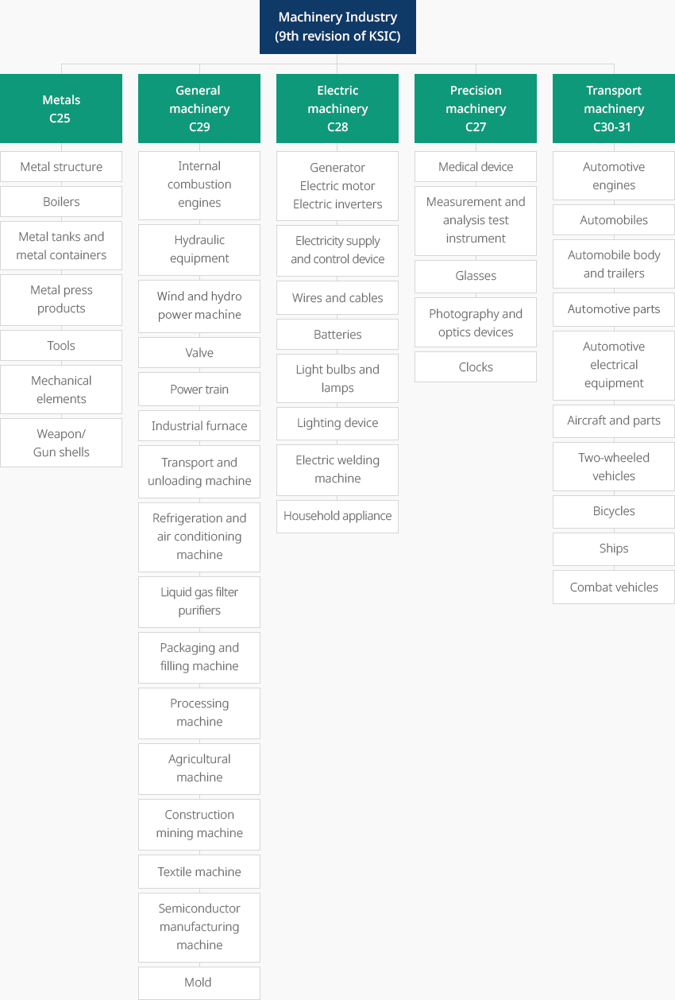
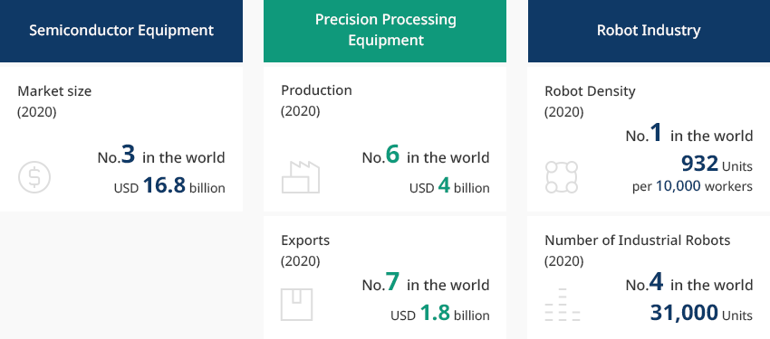
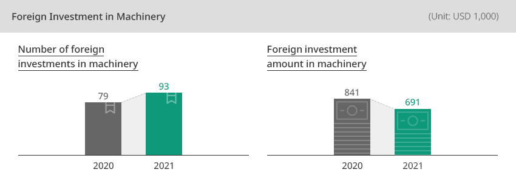
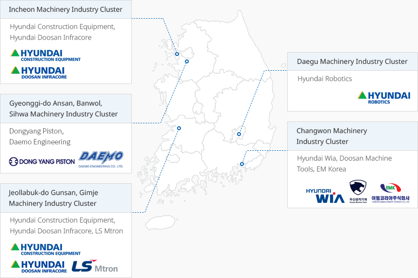

Machinery
- Home
- Why KOREA
- Industry
- Machinery
-
Definition of The Machinery Industry CloseDefinition of The Machinery IndustryThe machinery industry refers to five major industries, which according to the Korean Standard of Industry Classification
(KSIC), are general machinery, electrical machinery, precision machinery,
transport machinery, and metal products (assembly metal)."Classification of Five Major Machinery Industries According to the Korean Standard of Industry Classification (KSIC)"Machinery Industry(9th revision of KSIC)-
Metals C25
- Metal structure
- Boilers
- Metal tanks and metal containers
- Metal press products
- Tools
- Mechanical elements
- Weapon/Gun shells
-
General machinery C29
- Internal combustion engines
- Hydraulic equipment
- Wind and hydro power machine
- Valve
- Power train
- Industrial furnace
- Transport and unloading machine
- Refrigeration and air conditioning machine
- Liquid gas filter purifiers
- Packaging and filling machine
- Processing machine
- Agricultural machine
- Construction mining machine
- Textile machine
- Semiconductor manufacturing machine
- Mold
-
Electric machinery C28
- Generator, Electric motor, Electric inverters
- Electricity supply and control device
- Wires and cables
- Batteries
- Light bulbs and lamps
- Lighting device
- Electric welding machine
- Household appliance
-
Precision machinery C27
- Medical device
- Measurement and analysis test instrument
- Glasses
- Photography and optics devices
- Clocks
-
Transport machinery C30-31
- Automotive engines
- Automobiles
- Automobile body and trailers
- Automotive parts
- Automotive electrical equipment
- Aircraft and parts
- Two-wheeled vehicles
- Bicycles
- Bicycles
- Combat vehicles
 ※ Source: Statistics Korea
※ Source: Statistics Korea -
Metals C25
-
Industrial Ecosystem with Forward and Backward Linkage Strengthens Global Competitiveness OpenIndustrial Ecosystem with Forward and Backward Linkage Strengthens Global CompetitivenessThe Korean machinery industry maintains price competitiveness and is connected with related industries, such as automobiles, aviation, shipbuilding, semiconductors, and displays.As of 2020, Korea was the world's third largest semiconductor equipment market, with a market size of USD 16.08 billion. The production of precision processing equipment reached USD 4 billion (no. 6 in the world) with exports of USD 1.8 billion (no. 7 in the world). The manufacturing system supply capacity is expected to be further strengthened following the expansion of smart factories in Korea’s key industries. ※ Precision processing equipment refers to the machine tool industry. It includes all machines used for cutting and plastic working among various manufacturing methods.Korea's robot density index (the number of robots used per 10,000 workers) was the highest in the world in 2020. Korea has the fourth largest number of industrial robots in the world."Korea’s Major Machinery Industry"
- Semiconductor Equipment: Market size (2020) No. 3 in the world USD 16.8 billion
- Precision Processing Equipment: Production (2020) No. 6 in the world USD 4 billion, Exports(2020) No. 7 in the world USD 1.8 billion
- Robot Industry: Robot Density (Robot Density) (2020) No. 1 in the world 932 units per 10,000 workers, Number of Industrial Robots(2020) No. 4 in the world 31,000 units
※ Source: Semiconductor Equipment and Materials International (April 2021), Gardner, Korea Machine Tool Manufacturers’ Association, International Federation of Robotics (IFR) -
Export-based Growth Outlook To Become Korea’s Core Industry OpenExport-based Growth Outlook To Become Korea’s Core IndustryThe machinery industry is a core industry of Korea that ranks no. 6 in terms of production value, no. 1 in terms of the number of businesses, no. 3 in terms of the number of employees, and no. 4 in terms of added-value, among the manufacturing industries.The average annual export growth rate for the past five years (2015-2020) is 1.4%, and the average annual growth rate of the trade balance is -0.8%. The average annual growth rate of exports of semiconductor equipment recorded 13.1% during the same period."Korean Machinery Industry in the Manufacturing Industries"(As of 2019)
Korean Machinery Industry in the Manufacturing Industries KSIC Middle Classification, Production Value, Number of Companies, Number of Employees, Value-added KSIC Middle Classification Production Value Number of Companies Number of Employees Value-added Code Item KRW trillion Ratio Rank Number Ratio Rank 1,000 person Ratio Rank KRW trillion Ratio Rank C Manufacturing (10~33) 1,552 100.0 - 69,639 100.0 - 2,928 100.0 - 557 100.0 - 29 Other machinery and equipment manufacturing 123 3.8 6 9,835 14.1 1 335 11.4 3 45 8.0 4 ※ Source: Statistics Korea, Survey on Mining and Manufacturing Industries (10 persons or more)※ Source: Statistics Korea, Survey on Mining and Manufacturing Industry Trends, Survey on Mining and Manufacturing Industries; Korea Customs Service, Trade Statistics -
Investment Flow into Korea Focusing on General Machinery and Machine Tools OpenInvestment Flow into Korea Focusing on General Machinery and Machine ToolsForeign investment in machinery is centered on general machinery and machine tools, and it showed a decrease in 2019 compared to the previous year.One example is Volvo Group Korea, which acquired a construction machinery business from Samsung Heavy Industries in 1998 and entered Korea. Since its entrance, the construction equipment division of Volvo Group Korea has become the global production base for Volvo Group's excavator business, exporting more than 80% of its total output to Europe, North America, and Asia.Lam Research, a US-based world-class semiconductor equipment maker, decided to completely relocate its R&D center to Korea in 2019. It is expected to actively promote collaboration and joint development with domestic material, parts, and equipment companies.In 2021, ASML of the Netherlands, the only supplier of extreme ultraviolet (EUV) exposure equipment necessary for the production of wafers under 10 nanometers, announced its plan to invest in a training center and remanufacturing center for engineers in Hwaseong, Gyeonggi-do. It is a high-tech equipment field that will play a key role in the K-semiconductor belt.
 ※ Source: Foreign Investment Statistics
※ Source: Foreign Investment Statistics -
Government Policy to Support Development of Robot Technologies OpenGovernment Policy to Support Development of Robot TechnologiesThe Korean government announced its plant to designate specialized complexes for materials, parts, and equipment in February 2021. The Gyeongnam region is designated as a specialized complex in the precision machinery sector, and the global supply chain of the machinery industry will be strengthened.The Korean government announced the 2021 Intelligent Robot Implementation Plans in April 2021. It is expected to respond to social needs (population reduction, quality of life improvement) following the spread of collaborative robots, accelerate the digitalization of all industries by using robots, improve policies preemptively, and create an environment for using robots based on the evidence base. The manufacturing industry has drawn attention following the Enforcement of the Act on Special Measures to Strengthen the Competitiveness of the Materials, Components and Equipment Industry announced by the Korean government in April 2020. The strong will of the Korean government to foster industrial robots is expected revitalize the machinery industry.The Korean government prepared the 3rd Intelligent Robot Basic Plan (2019-2023) in August 2019. Seven bases for testing/certification, demonstration, and corporate support were established, and a regulatory sandbox system was introduced through the revision of the Industry-Academia Convergence Promotion Act.※ Seven bases: Robot Certification Center (Daegu), Safety Robot/Underwater Robot Complex Center (Gyeongbuk), Manufacturing Robot Technology Center (Gyeongnam), Marine Robot Center (Busan), Healthcare Robot Center (Gwangju), Robot Industrialization Support Center (Daejeon), Convergence Parts Center (Bucheon)"2021 New Technology Development Tasks"
2021 New Technology Development Tasks Fields, Key Technology Fields Key Technology Caring Develop human-following semi-autonomous robot bed for quarantine and transport of infected patients Develop surveillance assistance and patient monitoring robot system in quarantine facilities for infected patients Develop caring robot for quarantine facilities Medical Develop lightweight, wearable rehabilitation robot capable of self-repair at all times Logistics Develop robot-based loading system technology for cargo loading and unloading Develop mobile logistics handling robot technology for efficient operation of Korean-style logistics warehouses Comprehensive Develop robot system for realization of robot utilization service BM ※ Source: 2021 Intelligent Robot Joint Action Plans of all related ministries (April 2021) -
Machinery Clusters with Metropolitan and Gyeongnam at the Center OpenMachinery Clusters Centered on Metropolitan and Gyeongnam RegionsAs of 2019, 63.8% of all operators in the Korean machinery industry were located in the metropolitan area and Gyeongnam. The Gyeongnam machinery industry, in particular, accounted for the second highest proportion of the total domestic machinery industry with 14.3%.Gyeongnam has an excellent machinery industry ecosystem from materials, parts, and finished products with the Changwon National Industrial Complex at the center. Doosan Machine Tools and Hyundai Wia, which are listed on the world's top 10 machine tool companies in terms of sales, are located in this region. Materials and parts companies, such as SeAH Changwon Integrated Special Steel, Korea Steel, and Korea NSK, are located in this region and supply materials and parts to machinery, automobile, aviation, and shipbuilding companies located near Changwon."Major Clusters in the Korean Machinery Industry"
- Incheon Machinery Industry Cluster: Hyundai Construction Equipment, Hyundai Doosan Infracore
- Gyeonggi Ansan, Banwol, Sihwa Machinery Industry Cluster: Dongyang Piston, Daemo Engineering
- Jeonbuk, Gunsan, Gimje Machinery Industry Cluster: 현대건Hyundai Construction Equipment, Hyundai Doosan Infracore, LS Mtron
- Daegu Machinery Industry Cluster: Hyundai Robotics
- Changwon Machinery Industry Cluster: Hyundai Wia, Doosan Machine Tools, EM Korea
※ Contributor: Korea Institute for Industrial Economics and Technology


Invest KOREA
Machinery/Robots/Other Manufacturing PM
Lee Chul Soon
Key Industries Promotion Team
E-mail
T.+82-2-3460-7724
Recommendation on Locations
Industrial complex information
[Chungcheongbuk-do Jincheon County] Munbaek Precision Machinery Industrial
Complex
Click [Go to Detailed Information] to go to the relevant information screen of
Smart K-Factory service of Industrial Complex Corporation.
-
Complex nameMunbaek Precision Machinery Industrial Complex
-
Initial designation date2011.03.04
-
Designated area(m2)399,948
-
ManagementChungcheongbuk-do Jincheon County
-
Nearby RailwayOgeunjang Station
-
Distance from station(km)15
-
Nearby AirportCheongju International Airport
-
Distance from airport(km)16
-
Industrial water Supply capacity(ton/day)511(㎥/day)
-
Affiliation local governmentChungcheongbuk-do Jincheon County
-
Population81,949
Industrial complex information
[Chungcheongnam-do Dangjin City] Asan(Bugok District)
Click [Go to Detailed Information] to go to the relevant information screen of
Smart K-Factory service of Industrial Complex Corporation.
-
Complex nameAsan(Bugok District)
-
Initial designation date1979.12.14
-
Designated area(m2)3,118,889
-
ManagementKorea Industrial Complex Corporation
-
Nearby RailwayPyeongtaek Station
-
Distance from station(km)44
-
Nearby AirportCheongju International Airport
-
Distance from airport(km)93
-
Industrial water Supply capacity(ton/day)-
-
Affiliation local governmentChungcheongnam-do Dangjin City
-
Population166,067
Industrial complex information
[Jeollanam-do Yeosu City] Yulchon 1 General Industrial Complex (Gwangyang
Bay Area Free Economic Zone)
Click [Go to Detailed Information] to go to the relevant information screen of
Smart K-Factory service of Industrial Complex Corporation.
-
Complex nameYulchon 1 General Industrial Complex (Gwangyang Bay Area Free Economic Zone)
-
Initial designation date1992.05.13
-
Designated area(m2)9,106,791
-
ManagementGwangyang bay area Free Economic Zone Authority
-
Nearby RailwayYulchon Station
-
Distance from station(km)5
-
Nearby AirportYeosu Airport
-
Distance from airport(km)5
-
Industrial water Supply capacity(ton/day)30,937(㎥/day)
-
Affiliation local governmentJeollanam-do Yeosu City
-
Population280,603
Industrial complex information
[Gyeonggi-do Ansan City] Banwol Plating General Industrial Complex
Click [Go to Detailed Information] to go to the relevant information screen of
Smart K-Factory service of Industrial Complex Corporation.
-
Complex nameBanwol Plating General Industrial Complex
-
Initial designation date1988.02.16
-
Designated area(m2)162,045
-
ManagementGyeonggi-do Ansan City
-
Nearby RailwaySuwon Station
-
Distance from station(km)13
-
Nearby AirportGimpo International Airport
-
Distance from airport(km)40
-
Industrial water Supply capacity(ton/day)-
-
Affiliation local governmentGyeonggi-do Ansan City
-
Population653,733
Industrial complex information
[Gyeongsangnam-do Changwon City] Jinbuk Agricultural Industrial
Complex
Click [Go to Detailed Information] to go to the relevant information screen of
Smart K-Factory service of Industrial Complex Corporation.
-
Complex nameJinbuk Agricultural Industrial Complex
-
Initial designation date1989.12.15
-
Designated area(m2)133,170
-
ManagementGyeongsangnam-do Changwon City
-
Nearby RailwayMasan Station
-
Distance from station(km)22
-
Nearby AirportSacheon Airport
-
Distance from airport(km)51
-
Industrial water Supply capacity(ton/day)330(㎥/day)
-
Affiliation local governmentGyeongsangnam-do Changwon City
-
Population1,038,677
Industrial complex information
[Ulsan Metropolitan City Buk-gu] Jungsan General Industrial Complex
Click [Go to Detailed Information] to go to the relevant information screen of
Smart K-Factory service of Industrial Complex Corporation.
-
Complex nameJungsan General Industrial Complex
-
Initial designation date2006.05.11
-
Designated area(m2)128,392
-
ManagementUlsan Metropolitan City
-
Nearby RailwayTaehwagang Station
-
Distance from station(km)17
-
Nearby AirportUlsan Airport
-
Distance from airport(km)10
-
Industrial water Supply capacity(ton/day)219(㎥/day)
-
Affiliation local governmentUlsan Metropolitan City Buk-gu
-
Population1,140,310